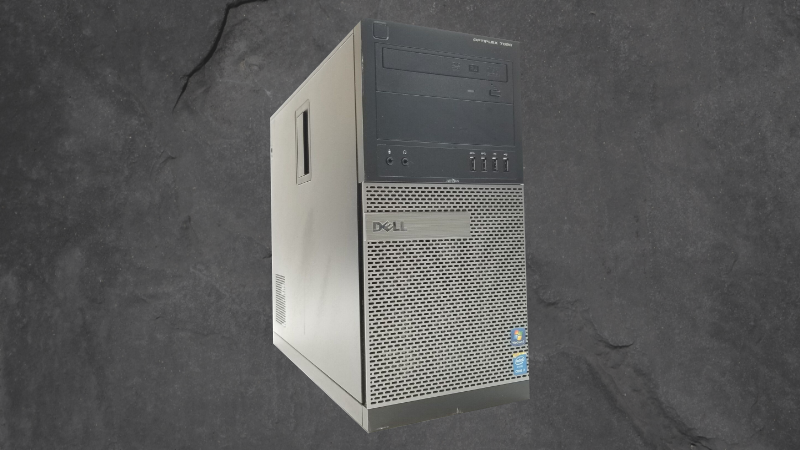

Computers for Frugal Designers
2022-09-16

If you’re a full-time designer working for a company they will give you a computer.
You might get to pick between Windows or Mac, but designers are usually forced to use Mac. (Not my preference)
If you’re a freelance designer you’ll want to get the best return on your investment. (ROI). So let’s figure out your budget and how you’ll use this computer before we go shopping.
Questions:
- What is your budget?
- Decide between a Laptop or a Desktop?
- Will this be your primary computer?
- Do you want to play games on it?
- Will you build it yourself or buy it prebuilt?
- What design software do you use?
What is your budget?
First, decide how much you can reasonably afford for a computer. If money is no object then stop reading and buy the most powerful computer you can find.
Since we are trying to be frugal I suggest not paying more than $300.00. (Including taxes)
This might seem impossible with today’s computers costing thousands. But if we look at used computers on eBay we can find good deals on reasonably powerful systems.
Look for well-established brands like Dell, HP, and Lenovo. Many companies cycle out their fleet of well-maintained business-class computers every few years. Of course, you’ll want to avoid systems that are “End of Life” (EOL). But, with a bit of patience and luck, you can find good deals.
Computers 3 to 5 years old can be upgraded. Adding more ram, an SSD, and a slightly more powerful video card will breathe new life into an old system. Note: unless otherwise stated used computers like these will come with the Windows operating system pre-installed.
I suggest looking for a computer with a quad-core processor (or better), a minimum of 8 GB of ram, and a decent video card. This system will work fine for email, light browsing, social media, YouTube, streaming, and most design work. You might even be able to play a few low-end games.
With more patience, you can find systems with an 8-core processor (or better), 16 GB of ram, an SSD, and a 4 GB video card for less than $300.00. These are the deals you want. They can do everything the less powerful system can do. Plus more intensive design work and higher quality gaming.
Decide between a Laptop or a Desktop?
Laptops by default are less powerful, wear out faster, and cost more. Their main benefit is their mobility.
If you travel for work then a laptop makes sense. But, if like most people, you work from home then a laptop won’t provide a good ROI.
In my opinion, you should look for a great deal on a used desktop computer that you can upgrade. You’ll get a better ROI and the system will last longer.
Will this be your primary computer?
Many people these days live on their smartphones and only use their company-provided computers while at work.
If you’re a designer you’ll likely have more than one computer. This keeps your corporate work separate from your personal projects. Most corporate computers are locked down by the security team to prevent installing unapproved applications, data loss, and other issues that could harm the company.
Depending on corporate policies and security means you cannot use your work computer for personal projects. Having a separate computer gives you the freedom to choose.
Do you want to play games on it?
Surprisingly there are a lot of people that don’t play computer games. Either they don’t like video games at all (rare), play games on their phone, or have a gaming console.
People who don’t play computer games can save money by not including an expensive video card. Designers will want a mid-tier video card to speed up their design software.
Will you build it yourself or buy it prebuilt?
It is a common myth among non-technical people that building a computer costs less than buying a prebuilt one.
Even with resources like Linus Tech Tips “How to build a PC” and the PC Part Picker website. The reality is building a computer from parts is only cheaper if you know what you’re doing.
Technical people save money by spending time finding compatible parts, sourcing good deals, assembling the system, and installing the operating system and other software.
Remember a computer you build yourself won’t have a warranty. If anything goes wrong with the hardware or software it is up to you to fix it.
With our current economic situation, it's a better ROI to buy a used prebuilt system. Which includes a monitor, speakers, mouse, and keyboard.
What design software do you use?
Adobe Creative Cloud is the gold standard of design software. This includes Photoshop, Illustrator, InDesign, and Adobe XD to name a few.
But it comes with an expensive monthly service fee. Corporate companies usually pay for these Adobe subscriptions and hand out license keys to on-staff designers.
Adobe only supports Windows and Mac. So, if you want to use Linux as your operating system, you’re out of luck.
Freelance designers who cannot afford Adobe XD used the free version of Figma. Recently, Adobe purchased Figma which has made many designers anxious. Fearing the free version of Figma will be locked behind the Adobe paywall or killed off. We’ll have to wait and see what happens.
In the meantime, frugal designers can use these free open-source alternatives that work across all platforms.
- Photoshop => Gimp
- Illustrator => Inkscape
- InDesign => Scribus
- Adobe XD => Penpot
- After Effects => Natron
- Premiere Pro => Kdenlive
Summary
Your choice of computer depends on your budget and how you plan to use it.
Frugal designers can save money by buying used desktop computers and using free open-source alternative design software.
Results are all that matter. If you can produce good work, it doesn’t matter what tools you use.
Follow me on Twitter @starcorelabs